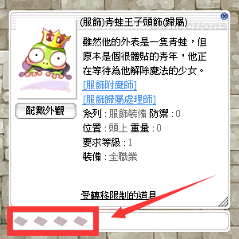

Enchant-System (附魔系統)
Über Enchant-Slots Zusatzstats auf Ausrüstung bringen — dazu kommt in Zero die Möglichkeit, bereits applizierte Enchants per Extract wieder als Enchant Stone herauszulösen.
🔮 Was ist Enchanting?
Sämtliche Ausrüstung in Ragnarok Zero verfügt über Card Slots. „Enchanting" bedeutet: einen bisher leeren (gesperrten) Slot mit einem ability-gebenden Item befüllen. Zusätzlich bietet Zero den Service Extract zum Herauslösen bereits gesetzter Enchants.

Ein kosmetischer Ausrüstungsgegenstand für den Kopf, der als Froschkönig dargestellt ist.
- Name: (Costume) Frog Prince Headgear (Account Bound)
- Beschreibung: Obwohl er wie ein Frosch aussieht, war er ursprünglich ein sehr rücksichtsvoller junger Mann, der darauf wartet, dass ein Mädchen seinen Fluch bricht.
- Funktionen: [Costume Enchantment], [Costume Binding NPC]
- Kategorie: Costume Equipment
- DEF: 0
- Position: Upper
- Gewicht: 0
- Benötigtes Level: 1
- Klasse: Alle Klassen
- Status: Account Bound Item
Der Button im UI zeigt 'Look' (Aussehen anlegen). Der untere Bereich mit den Rauten deutet auf verfügbare Verzauberungsslots hin.
🪄 Enchant (附魔)
Die Regeln für jeden Enchant variieren je nach Thema. Typische Parameter sind:
- Benötigte Materialien & Anforderungen (z. B. Zeny-Preis, Reagenzien, Ausrüstungszustand)
- Erfolgs- und Fehlschlag-Chance
- Weitere Einzel-Regeln, die vor dem Klick unbedingt gelesen werden sollten

Ein Dialogfenster mit dem NPC 'Costume Enchanter Babi', der die Möglichkeiten und Risiken der Kostüm-Verzauberung erklärt.
- [Costume Enchanter Babi]
- Sie können Kostüme durch den Einsatz von Enchantment Stones verzaubern.
- Aber:
- Die Erfolgsrate der Verzauberung beträgt 50%, bei einem Fehlschlag gehen die Enchantment Stones verloren.
- Welchen Teil möchtest du verzaubern?
Der NPC Babi bietet Kostüm-Verzauberungen an. Es besteht ein Risiko, dass Materialien bei einem Fehlschlag zerstört werden.
🧪 Extract (萃取)
Beim Extract wird ein bereits enchantetes Costume zerstört — im Gegenzug erhältst du den Enchant Stone zurück. Das lohnt sich vor allem bei seltenen oder hochwertigen Abilities, die man auf einem neuen Item weiterverwenden möchte.

Ein Dialogfenster des NPCs 'Costume Enchanter Bobby', der die Extraktion von Enchant-Steinen aus Kostümen erklärt.
- Abbrechen
- Upper (Headgear)
- Middle (Headgear) (leer)
- Lower (Headgear) (leer)
- Garment (leer)
Der NPC warnt, dass die Extraktion des Enchant-Steins erfolgreich ist, das Kostüm dabei jedoch zerstört wird. Der Spieler wird aufgefordert, einen Ausrüstungsslot zu wählen.
📚 Aktuell freigeschaltete Enchant-Pools
🎽 Costume-Enchant (服飾附魔)
Basissystem für Costume-Slots — Details auf der offiziellen Seite.
⚔️ 80MD — Annihilation (殲滅隊-專屬附魔)
Exklusive Enchants für 80er-MD-Equipment.